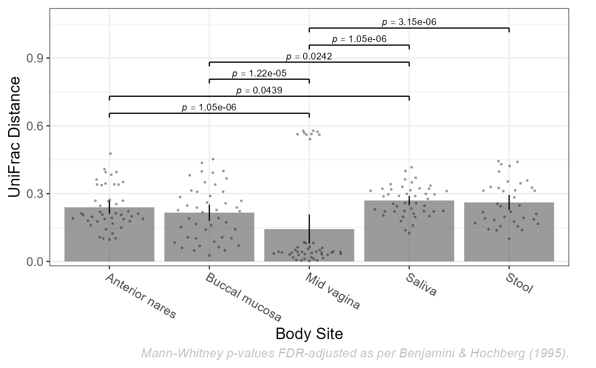

Visualize diversity or abundance as a boxplot, dotplot, etc.
# S3 method for BIOM plot( x, formula, layers = "box", color.by = NULL, pattern.by = NULL, shape.by = NULL, facet.by = NULL, colors = NULL, patterns = NULL, shapes = NULL, p.min = 0.05, p.adj = "fdr", vline = "ci95", xlab.angle = "auto", rline = NULL, ... )
Arguments
| x | A BIOM object, as returned from read.biom. |
|---|---|
| formula | Definition of what to plot on the x- and y- axes, given as
Y-axis options are:
|
| layers | What kind of plot to create. Options are box,
violin, dot, strip, crossbar,
errorbar, linerange, and/or pointrange.
Single letter abbreviations are also accepted. For instance,
|
| color.by, pattern.by, shape.by, facet.by | Metadata column to color,
pattern, shape, and/or facet by. If that column is a |
| colors, patterns, shapes | Names of the colors, patterns, and/or shapes
to use in the plot. Available names can be found by running
|
| p.min | Minimum adjusted p-value to display on the plot with a bracket.
Set to |
| p.adj | Method to use for multiple comparisons adjustment of p-values.
Run |
| vline | How to calculate min/max of the crossbar,
errorbar, linerange, and pointrange layers.
Options are range, ci (confidence interval), sd
(standard deviation), se (standard error), and mad
(median absolute deviation). You may optionally append a number to
ci to specify the confidence level, for instance
|
| xlab.angle | How to rotate the tick labels on the x-axis. 'auto' (the default), automatically selects a rotation value. 0, 30, and 90 sets the angle to horizontal, angled, and vertical, respectively. |
| rline | For plots with |
| ... | Parameters passed on to ggplot2 functions. Prefixing a parameter name with b., v., d., or s. forces that parameter to be passed to, and only to, geom_boxplot, geom_violin, geom_dotplot, or geom_jitter, respectively. Otherwise, parameters are passed along by matching against formal arguments. |
Value
A ggplot2 plot. The computed data points and statistics will
be attached as attr(p, 'data') and attr(p, 'stats'),
respectively.
Shapes can also be given as their string values, defined in pch_table here: https://github.com/tidyverse/ggplot2/blob/master/R/geom-point.r . Note that some shapes have a colored outline given by `color`, some are filled with `color`, and some are outlined in `color` and filled with `fill`. See https://blog.albertkuo.me/post/point-shape-options-in-ggplot/ for details.
See also
Examples
library(rbiom) infile <- system.file("extdata", "hmp50.bz2", package = "rbiom") biom <- read.biom(infile) plot(biom, Shannon ~ `Body Site`)plot(biom, Shannon ~ Sex, layers="vb", color.by="Body Site")plot(biom, Simpson ~ `Body Site`, layers="p", color.by="Sex", xlab.angle=30)# Dissimilarity boxplots #plot(biom, UniFrac ~ `==Body Site`) # Ordination plot(biom, bray ~ nmds)# Abundance Heatmap #plot(biom, Phylum ~ heatmap) # Dissimilarity Heatmap #plot(biom, UniFrac ~ heatmap) # Taxa abundance boxplots #plot(biom, Abundance ~ Phylum)